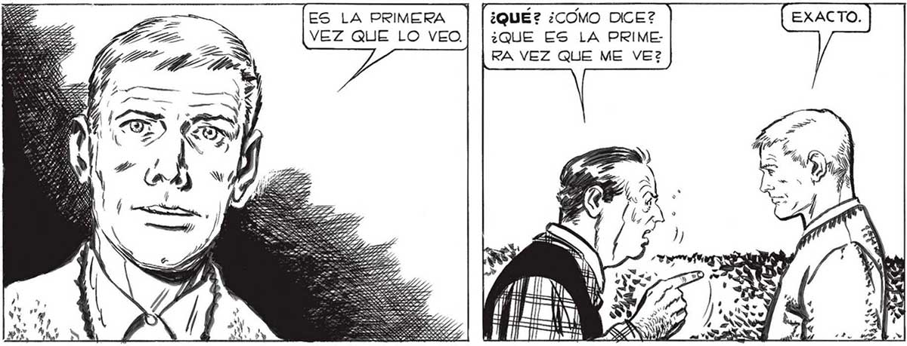

DISPENSE, SEÑOR... PERO LE REPITO: NI SÉ DE LO QUE ESTÁ USTED HABLANDO.. DEBE HABER ALGUNA CONFUSION... ESTO TIENE UNA SOLA EXPLICACION... QUE YO LO HE SONADO TODO,QUE EL ETERNAUTA Y SU RELATO NO HAN SIDO OTRA COSA QUE UNA ALUCINACION ... PERO... ES IMPOSIBLE QUE SE HAYA OLVIDADO DE MI... ¿NO ME RECUERDA USTED? ¡USTED ES EL ETERNAUTA! YO SOY EL GUIONISTA QUE... ES LA PRIMERA | [¿QUÉ? ¿COMO DICE? VEZ QUE LO VEO. | |¿QUE ES LA PRIME: RA VEZ QUE ME VE2 S ld A o ES SICLARO QUE MEDIA HORA ES TIEMPO DE SOBRA PARA IR HASTA LA ESQUINA A BUSCAR EL DIARIO ! "USTED SE EQUIVOCA...¡6l HACE APENAS MEDIA HORA QUE FALTO DE GASA! ¿NO ES ASÍ, ELENA? PERO...¡5l UA PASADO HORAS Y HORAS CONTANDOME SU HISTORIA. SENOR ! MM ¡YA SE LO QUE HARE! IRÉ A LA FERRETERIA..¡DEBE HABER ALLÍ TRABAJANDO, UN CHICO LLAMADO PABLO! TENDRA UNOS OCHO O NUEVE AÑOS AHORA... PERO... ¿SERA POSIBLE QUE TODO HAYA EXISTIDO SOLO EN MI CABEZA? SI PUDIERA ENCONTRAR ALGUNA FORMA DE PROBAR QUE TODO NO HA SIDO UNA INVENCIÓN. Sl: EL ETERNAUTA HA SIDO UNA IMAGINACION MIA... AUNQUE, ¿ES POSIBLE QUE UNA IMAGINACION SEA TAN DETALLADA ? Í 5 361
